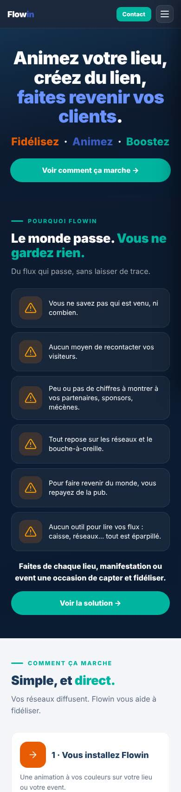
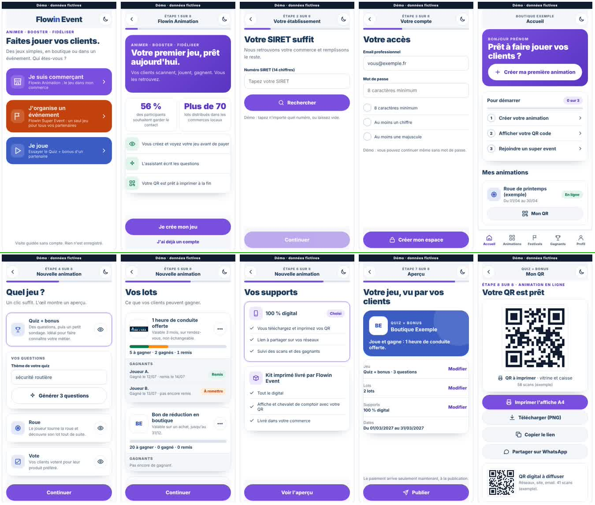
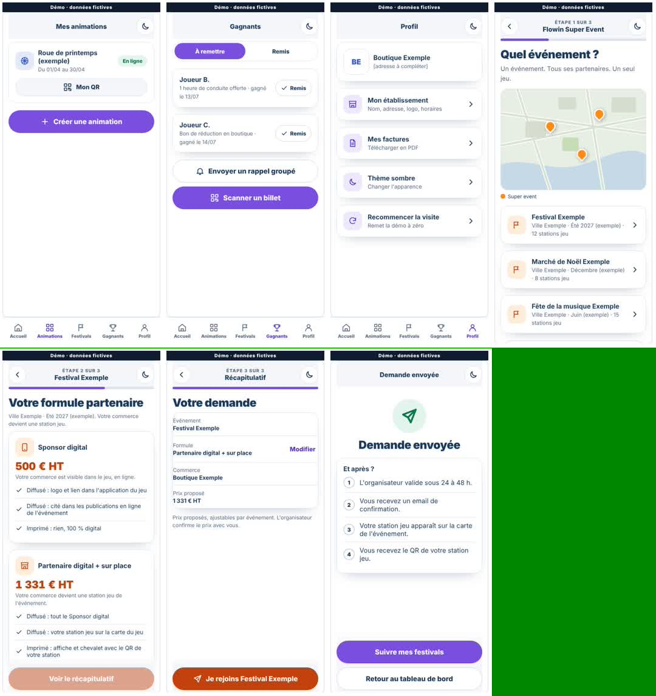
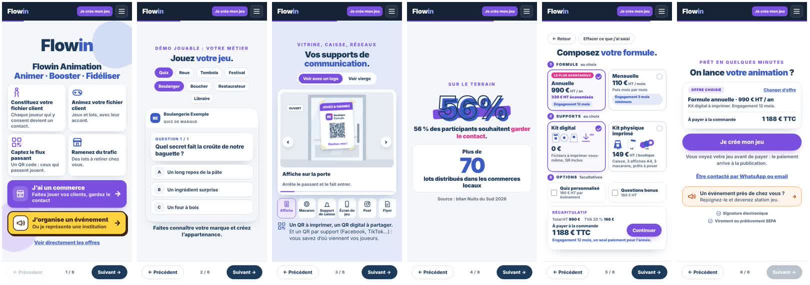
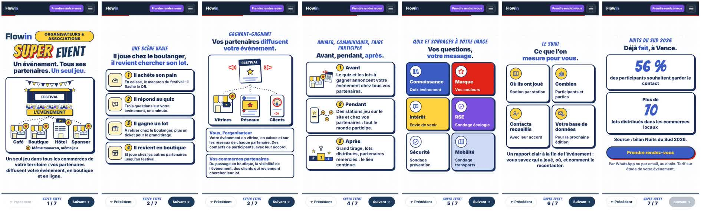
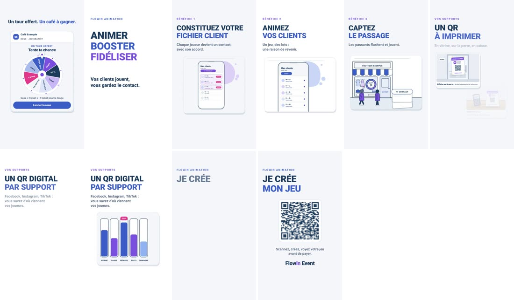
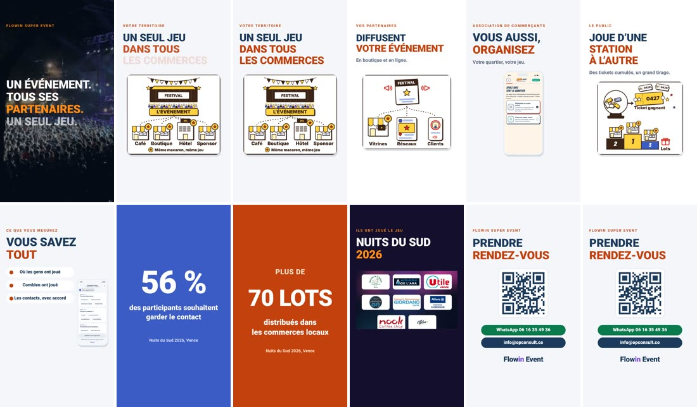
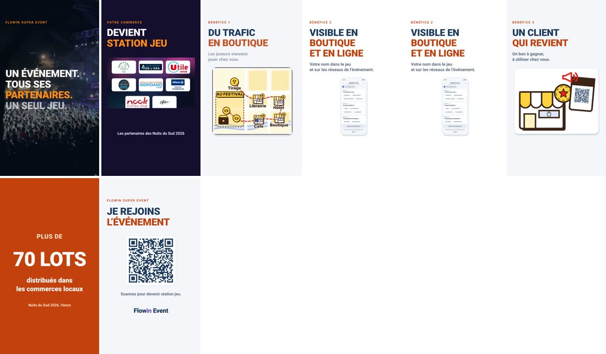
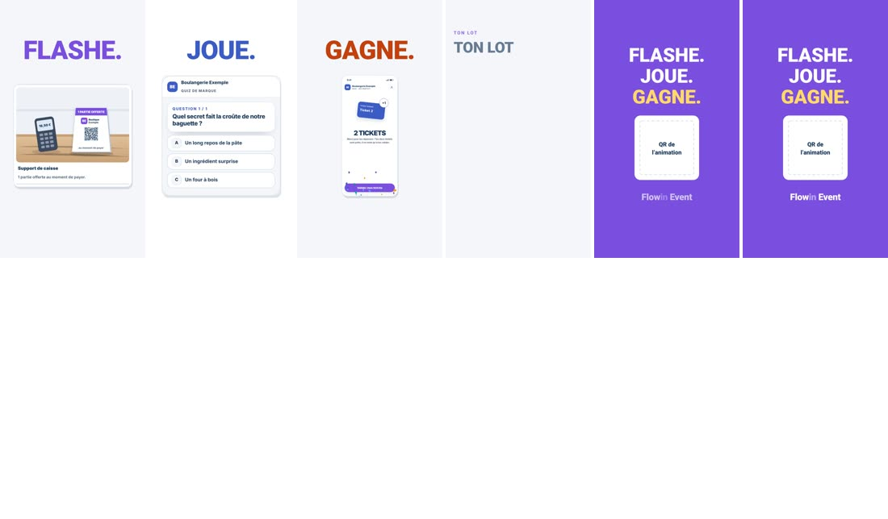

Visite guidée, plaquettes Animation et Super Event, vidéos. Pour chacun : où il en est sur 10, ce qui fonctionne et se garde, ce qui manque pour atteindre 10, et la proposition graphique. Rien n'est refait de zéro : on complète ce qui existe. Rien ne sera exécuté avant votre validation.
Votre verdict est juste, et les mesures le confirment. Le fond (prix, parcours, arguments) est bon et se garde. La forme ne fait ni outil, ni propre.
| Constat | Mesure sur les pages actuelles | Règle proposée |
|---|---|---|
| Couleurs qui ne sont pas celles de Flowin | Bouton principal violet partout ; la landing utilise encre et turquoise | Revenir à la charte de la landing (ci-dessous) ; le violet disparaît |
| Tailles de police incohérentes | Plaquette Animation : 19 tailles différentes, de 8 à 94 px. Plaquette Super Event : 14 tailles. Visite : 7 à 9 tailles par écran, dont 11 px | 5 tailles seulement : 13 · 15 · 18 · 24 · 32 px |
| Logo mal placé | Centré dans la visite, en petit dans une barre sombre sur les plaquettes, « Flowin » seul | « Flowin Event » toujours en haut à gauche, même taille, sur fond blanc |
| Trop d'informations | Plaquette Super Event : environ 60 mots et 6 tuiles de couleur sur l'écran RSE / quiz ; jusqu'à 115 mots sur un écran de la visite | 40 mots maximum par écran ; 3 cartes maximum ; le détail va dans un volet « En savoir plus » |
| Super Event trop décalé | Police BD (Bangers), bordures noires épaisses, jaune et rouge sur tous les écrans | Le style BD reste sur le logo Super Event seulement ; le reste suit la charte outil |
| Décalages de mise en page | Marges et rayons différents d'un écran à l'autre, cartes de hauteurs inégales | Une grille : marge 16 px, rayon 14 px, écart 12 px entre cartes |

Les couleurs relevées sur la landing en ligne, adaptées en version claire « outil » :
| Rôle | Couleur |
|---|---|
| Fond | Blanc et gris très clair #F4F6F9 |
| Texte, titres, logo | Encre #1B3A5C |
| Bouton principal, sélection | Turquoise #00B4A0 |
| Flowin Animation | Bleu #3B5CC4 |
| Flowin Super Event | Orange #C2410C |
| Chiffres clés | Ambre #F59E0B, sur les chiffres uniquement |
Le turquoise sur fond blanc est trop clair pour un texte de 13 px : en texte, on utilise une version foncée (#00806F). Le bouton plein reste #00B4A0 avec texte blanc en gras.
Appliquer la charte de la landing et les 5 tailles de police à la visite et aux deux plaquettes.
Logo à gauche partout, grille commune, 40 mots maximum par écran (le reste en volet).
Super Event : style BD limité au logo ; ajout des 3 écrans du parcours ; contrôle à 360, 390 et 430 px.
Ces notes jugeaient le contenu. Le ré-audit ci-dessus juge la forme ; c'est lui qui compte.
| Support | Note | Ce qui manque pour 10 |
|---|---|---|
| Parcours commerçant (visite guidée) | 7/10 | 3 écrans de votre parcours : validation du compte, rapports du dashboard, paiement par virement à la publication |
| Plaquette Animation | 7/10 | Nom « Flowin Event » dans la barre, un seul bouton à l'écran 1, « prélèvement SEPA » à remplacer par virement, textes trop petits |
| Plaquette Super Event | 7/10 | Écran 5 en aplats de 6 couleurs, nom dans la barre, bouton rendez-vous trop petit en haut |
| Vidéo commerçant | 6,5/10 | Plans vides ou en double, écrans de téléphone illisibles, pas de plan dashboard / rapport / publication |
| Vidéo organisateur | 7/10 | Plan en double, coordonnées à confirmer |
| Vidéo partenaire | 6,5/10 | Plan en double, écrans de téléphone illisibles |
| Vidéo joueur | 5/10 | Plan « Ton lot » vide, QR non rempli, fond violet plein en fin |
Base de l'audit : captures réelles des pages en ligne à 390 px, et une image toutes les 4 secondes pour les vidéos. Un plan qui paraît vide peut être un fondu en cours : chaque cas est à revoir image par image avant correction.


Ajouter l'écran « Compte en cours de validation ».
Ajouter l'écran « Rapports » dans le tableau de bord.
Ajouter « Publier et régler par virement » ; même règlement sur le récapitulatif super event ; accueil en cartes blanches.

« Flowin Event » dans la barre ; textes à 13 px minimum.
Écran 1 : un seul bouton « Je crée mon jeu » ; l'organisateur passe en lien discret.
Écran 6 : « Règlement par virement à la publication » ; lien « Voir le parcours » vers la visite.

Écran 5 en cartes blanches, couleur seulement sur le pictogramme.
« Flowin Event » et bouton rendez-vous à 44 px de haut.
Une phrase de moins par carte aux écrans 2 à 4 ; coordonnées remplies.




Les trois écrans qui manquent au parcours commerçant, déjà dans la charte de la landing (blanc, encre, bouton turquoise, 5 tailles de police). Les mêmes écrans servent ensuite de plans pour la vidéo commerçant (côté tuto).
S'insère après « Votre accès ». La carte des partenaires est seulement annoncée, pas produite.
Nouvel onglet du tableau de bord : venues, sexe, constitution du fichier client, sources par QR, réponses au jeu.
Remplace le passage direct « Publier → QR ». Même bloc sur le récapitulatif super event.
Répondez par numéro : « ok », « non » ou une phrase. Je n'exécute que ce qui est validé, sur les fichiers existants.